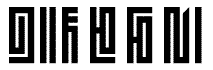
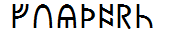

(Latin mapped)
(Latin mapped)
(PUA mapped)


(PUA mapped)
(Regular and Italic)
(Regular and Italic)
(Regular, Italic, Bold and Bold-Italic)
Version 2.00
Version 2.00
Version 2.00
(Latin mapped)


(PUA mapped)

(PUA mapped)
(Unicode mapped)
(PUA mapped)
| Script | Font Name | Version | License | Sample |
|---|---|---|---|---|
| Latin | BabelStone Roman | Version 9.006 | |
|
| Centaurian (Latin mapped) |
BabelStone Centaurian | Version 1.01 | ||
| Goblin (Latin mapped) |
BabelStone Goblin | Version 1.01 | ||
| BabelStone Goblin Vertical | Version 1.01 | |||
| Han | BabelStone Han | Version 11.0.3 | APL | |
| BabelStone Han PUA | Version 1.123 | APL | ||
| Khitan (PUA mapped) |
BabelStone Khitan Large Glyphs | Version 1.005 | ||
| BabelStone Khitan Seal Glyphs | Version 1.003 | |
||
| BabelStone Khitan Small Glyphs | Version 1.009 | |
||
| BabelStone Khitan Small Rotated | Version 1.006 | |||
| Marchen | BabelStone Marchen | Version 9.001 | ||
| Naxi Dongba (PUA mapped) |
BabelStone Naxi LLC | Version 1.000 | ||
| Ogham | BabelStone Ogham (Regular and Italic) |
Version 2.00 | ||
| Version 2.00 | ||||
| BabelStone Ogham Bound (Regular and Italic) |
Version 2.00 | |||
| Version 2.00 | ||||
| BabelStone Ogham Fixed | Version 2.01 | |||
| BabelStone Ogham Stemless | Version 2.01 | |||
| BabelStone Ogham Lithic | Version 1.01 | |||
| BabelStone Ogham Pictish (Regular, Italic, Bold and Bold-Italic) |
Version 1.00 | |||
| Version 1.00 | ||||
| Version 1.00 | ||||
| Version 1.00 | ||||
| BabelStone Ogham Special | Version 1.01 | |||
| Old Turkic | BabelStone Irk Bitig (Monochrome and Colour) | Version 1.01 | ||
| Phags-pa | BabelStone Phags-pa Book | Version 1.02 Version 2.00 |
||
| BabelStone Phags-pa Tibetan A | Version 1.01 Version 2.00 |
 | ||
| BabelStone Phags-pa Tibetan B | Version 1.01 Version 2.00 |
|||
| BabelStone Phags-pa Seal | Version 1.01 | |||
| Pigpen (Latin mapped) |
BabelStone Pigpen | Version 1.02 | ||
| BabelStone Club Penguin | Version 1.02 | |||
| BabelStone Leeson | Version 1.02 | |||
| Runic | BabelStone Runic | Version 7.001 | ||
| BabelStone Runic Ruled | Version 7.001 | |||
| BabelStone Runic Elder Futhark | Version 3.004 | |||
| BabelStone Runic Short Twig | Version 3.002 | |||
| BabelStone Runic Long Branch | Version 3.001 | |||
| BabelStone Runic Norse | Version 3.001 | |||
| BabelStone Runic Norn | Version 3.001 | |||
| BabelStone Runic Staveless | Version 3.001 | |||
| BabelStone Runic Staveless Ruled | Version 3.001 | |||
| BabelStone Runic Dotted | Version 3.001 | |||
| BabelStone Runic Beagnoth | Version 7.001 | |
||
| BabelStone Runic Beorhtnoth | Version 7.001 | |||
| BabelStone Runic Beorhtric | Version 7.001 | |||
| BabelStone Runic Beowulf | Version 7.001 | |||
| BabelStone Runic Berhtwald | Version 7.000 | |||
| BabelStone Runic Byrhtferth | Version 7.001 |  | ||
| BabelStone Moon Runes | Version 7.000 | |
||
| Sui (Shuishu) (PUA mapped) |
BabelStone Shuishu WSF | Version 1.000 | ||
| BabelStone Shuishu WZL | Version 1.000 | |||
| BabelStone Shuishu ZJR | Version 1.000 | |||
| BabelStone Shuishu Nishida | Version 1.000 | |
||
| Tangut (PUA mapped) |
BabelStone Tangut HXM2004 | Version 2.00 | ||
| BabelStone Tangut KYC2006 | Version 2.00 | |||
| BabelStone Tangut LFW1986 | Version 2.00 | |||
| BabelStone Tangut LFW1986X | Version 2.00 | |||
| BabelStone Tangut LFW1997 | Version 2.00 | |||
| BabelStone Tangut Nishida1966 | Version 1.00 | |||
| BabelStone Tangut Sofronov1968 | Version 1.00 | |||
| BabelStone Tangut WHYJIndex | Version 1.002 | |||
| BabelStone Tangut Components | Version 3.00 | |||
| BabelStone Tangut Radicals | Version 1.002 | |||
| Tangut (Unicode mapped) |
BabelStone Tangut Wenhai | Version 1.002 | ||
| Tangut Yinchuan | Version 11.001 | Copyright Prof. Jing Yongshi | ||
| Tangut Yinchuan Inverse | Version 11.001 | Copyright Prof. Jing Yongshi | ||
| Tibetan | BabelStone Tibetan | Version 10.000 | ||
| Yi (PUA mapped) |
BabelStone Sani Yi | Version 1.000 | ||
| Zanabazar Square | BabelStone Zanabazar | Version 10.001 | ||
| Flags | BabelStone Flags | Version 2.07 | ||
| BabelStone Maritime | Version 0.001 | |||
| Mayan Numerals | BabelStone Mayan Numerals | Version 11.000 | ||
| Geometric Symbols | BabelStone Shapes | Version 11.000 | ||
| Game Symbols | BabelStone Xiangqi | Version 11.000 | ||
| BabelStone Xiangqi Colour | Version 11.000 |
All BabelStone fonts took considerable time and effort to create, and athough they are free for personal or commercial use, you are welcome to make a small voluntary payment via PayPal if you find them useful, and wish to help support the development of further fonts for historical scripts or other unusual fonts. Simply select the amount you wish to pay below.